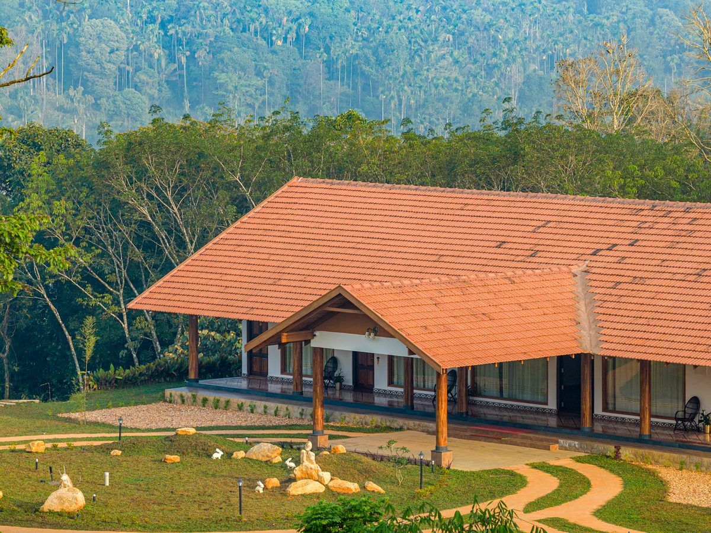

A drone is the easiest way to make footage look expensive, and also the easiest way to make it look generic. I've watched a lot of property and travel films open with a slow aerial reveal that could belong to literally any building in any city — impressive for four seconds, forgettable after that. The shots that actually work do one specific job: they tell the viewer something a ground camera couldn't.
Ask what the altitude is for, not just whether you have one
Before I fly anything, I ask what information lives only at height. Sometimes that's genuinely scale — a resort like The Old Acre in Wayanad sits across a hillside in a way you simply cannot register from the ground, so an aerial pass earns its place by showing the property's relationship to the land around it. Other times the honest answer is "nothing, I just want a drone shot," and in that case I leave the drone in the case. A corporate office interview doesn't need an establishing aerial of the building unless the building itself is part of the story.
Movement should imply a reason, not just a flex
The most common drone mistake is treating every shot as a demo reel for the drone. A slow orbit around a hero villa can be beautiful, but if it doesn't correspond to how a person would actually experience arriving at the property, it reads as decorative rather than narrative. I try to match aerial movement to something concrete: a reveal that follows the same approach a guest would drive in on, or a rise that tracks a walking path from entrance to view point. When the camera's movement mirrors a plausible human path through the space, it stops feeling like stock footage.
Aerials work best as punctuation, not as the whole sentence
In edit, I treat drone shots the way a writer treats an em dash — used constantly, it loses all force. One well-placed aerial establishing a resort's setting, cut against handheld or gimbal footage of the actual rooms, textures and people using the space, does more work than five different drone angles in a row. The wide shot gives context; the ground-level footage gives it feeling. A film needs both, and the aerial almost never needs to be more than 10–15% of total runtime to do its job.
The practical rule I use on every shoot
If I can't finish the sentence "this shot exists because ___" with something more specific than "it looks cool from up there," I don't fly it. That discipline is what keeps aerial footage feeling like it belongs to a specific place and project, instead of a generic drone showreel with a different building dropped in.